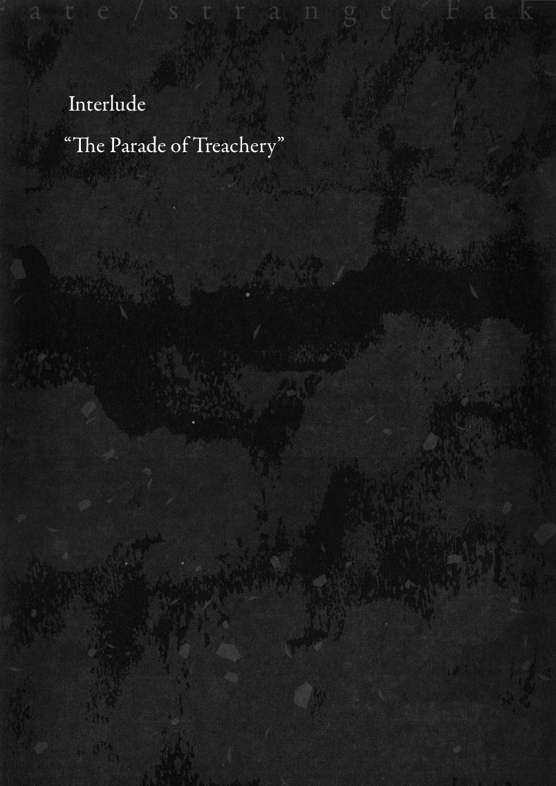

A mansão dos pântanos.
Mesmo com o dia avançando, a unidade de Faldeus não retornou às posições ao redor da mansão. Sigma, que confirmara esse fato pelas palavras das sombras de Watcher, abriu um bloco de notas e decidiu organizar as informações.
Saber havia anunciado que os soldados postados em vigilância ao redor deles "devem estar famintos demais" e naquele momento saíra para levar refrescos, preparados com os mantimentos preservados da mansão, aos franco-atiradores, observadores e batedores que ainda restavam. Segundo as sombras, a aparição repentina de Saber ao lado deles jogara os franco-atiradores e observadores em pânico. Ao que parecia, quase chegaram a atacá-lo, mas desde então as coisas haviam sido resolvidas amigavelmente.
Ayaka permanecera na mansão o tempo todo. Quanto a estar ou não indefesa, porém, as sombras relataram que "o mago que Saber trouxe consigo" a estava protegendo. Um Fantasma Nobre que invoca aliados... Eu realmente não esperava por isso. Espíritos Heroicos guardam profundezas ocultas.
Sigma prosseguiu organizando as informações, sem perceber que havia firmado contrato justamente com o Servo mais incomum de todos.
Assassin patrulhava naquele momento os arredores da mansão. Recusava-se a usar Energia Mágica de seu Mestre, o hematófago, e aparentemente estava sendo abastecida pelo mago acima mencionado, invocado pelo Fantasma Nobre de Saber, em troca de uma trégua temporária.
Sigma simpatizava com a situação de Assassin — ter colocado a própria vida nas mãos de uma estranha.
Ela estava alerta às forças de Faldeus. As sombras supunham que pretendia despachar imediatamente quaisquer batedores remanescentes que lançassem um ataque contra ela. Estavam deduzindo sua personalidade a partir de suas ações até ali; ao que parecia, nem mesmo o poder de Watcher era plenamente capaz de ler pensamentos.
Então até Watcher não é onipotente.
Parecia que, mesmo no caso do Fantasma Nobre de Assassin, ele só conseguira avisá-lo porque se tratava do ataque com cabelo que ela já havia usado na delegacia. Se fosse um ataque que Watcher nunca tinha visto antes, ele não teria recebido aviso algum do Capitão.
...Acho que fui salvo por acaso, pensou Sigma enquanto fazia a caneta correr pelo bloco. Escrevia num código que só ele entendia, para o caso de estar sendo observado por Saber ou Assassin.
"...Da minha posição, isso só parece um espírito maligno obrigando você a rabiscar bobagens." Sigma ignorou as palavras do Capitão e fez outra pergunta.
"Quero confirmar as diferenças de poder de combate entre as facções. Tirando as forças de Faldeus, quantas estão participando da Guerra do Graal como organizações?"
"Deixa eu ver. Em puro número de gente, teria de ser a equipe do chefe de polícia e de Dumas, que controla a polícia comum. Quanto ao perigo em grupos pequenos, há aquela que está dentro da homúnculo que acompanha Haruri Borzak."
"...Dentro dela? Quem é?"
"Essa é justamente a questão, não é? Ela ainda não se revelou, então nem mesmo Watcher tem certeza. Claro, quando se trata de alguém tão forte assim, esse Watcher amaldiçoado já devia ser capaz de adivinhar só pela presença, mas..."
Nesse ponto ele desapareceu, e o menino com o cajado de serpente assumiu a conversa.
"Ela está isolando completamente sua presença. E ainda utiliza seu poder apesar disso, então deve ser alguém notável. Não é só Watcher; até Enkidu, que possui habilidades de detecção de presença do mais alto nível, ainda não percebeu a existência dela nem a do Espírito Heroico de Haruri."
"...Entendo."
"Há muitas outras equipes das quais você deve desconfiar. Algumas agem em silêncio e sem paixão, então nem nós conseguimos compreender plenamente seus objetivos. Ainda não conseguimos ler os movimentos do grupo de Hipólita, e também não dá para prever o que o lobo prateado e Enkidu farão até que ajam."
Entendo. Nesse caso, também não posso baixar a guarda com facções que operam em grupos pequenos.
Sigma retomou o foco, pensando que, como suspeitava, aquilo não seria fácil.
"E quanto aos Protetores da Terra liderados por Tiné Chelc?"
"Suas forças em operação contam com cinquenta e seis pessoas ativas na cidade. Deve haver mais na base deles na ravina, mas a aldeia está fora do alcance da observação de Watcher. O poder de combate de Tiné Chelc equivale a cerca de quarenta e seis pessoas."
"Não eram cinquenta e seis?"
Sigma ficou confuso com a discrepância nos números.
"Sete são traidores a serviço de outras organizações", respondeu o menino com o cajado de serpente num tom objetivo. "Três foram abordados e estão hesitando. Não servirão para nada."
"...Entendo. Parece complicado."
"Há traidores em toda organização. Há três humanos na unidade de Faldeus trabalhando para a Família Scladio. E uma maga do nível de Francesca consegue facilmente fazer um humano mudar de lado com uma única sugestão, mesmo que ele não seja traidor."
"Esse tipo de aleatoriedade realmente parece a cara da Francesca."
Depois de expressar essa impressão meio sarcástica sobre sua verdadeira contratante, Sigma fez mais uma pergunta a Watcher.
"E quanto às facções cujos movimentos futuros você consegue prever?"
"Flat Escardos e o chefe de polícia formaram uma aliança temporária. Às dez da noite, o chefe deve reunir o Clã Calatin, comunicar-lhes seu plano e dar início à operação no Hospital Central de Snowfield."
"Por que no hospital?"
"Há uma Mestre hospitalizada lá, num estado inconsciente. Seu Espírito Heroico ainda não se mostrou, mas aparentemente já está agindo. Parece estar possuindo e controlando moradores da cidade. A escala disso chegou à casa das dezenas de milhares, então o chefe de polícia não poderá ignorar."
Sigma pediu mais detalhes. Ao que parecia, Flat e a polícia haviam formado uma aliança e planejavam colocar a garota em quarentena e examiná-la. Como ela estava infectada por um vírus aprimorado pelos Kuruoka, agiriam com mais cautela do que o normal.
"Um hematófago está dormindo ao lado da cama da garota, mas seus motivos são obscuros. Ele chegou a murmurar algo sobre usá-la para derrubar Assassin."
A sombra — agora o menino de asas mecânicas — repassou informações sobre o vampiro Jester Karture. Ao que parecia, o Mestre de Assassin tinha uma personalidade bastante distorcida. Sigma ouviu tudo aquilo e pensou em como deveria agir.
Devo ficar quieto? Devo intervir diretamente? Ou passar parte das informações a Faldeus e deixar que ele resolva...?
Sigma considerou uma variedade de possibilidades. Então a sombra disse algo que o lançou em confusão ainda maior.
"E, hum... não é certo, mas, depois das dez da noite, Alkeides pode se dirigir ao hospital."
"O arqueiro de Bazdilot? Por quê?"
"Porque ele provavelmente vai descobrir sobre a garota que está lá."
"?"
"É simples, garoto", disse a sombra — agora o Capitão — ao perplexo Sigma.
"Eu não disse que o chefe vai explicar a operação ao Clã Calatin às dez?"
"Você não quer dizer..."
"Policiais sujos.
Duvido até que sua excelência, o chefe de polícia, suspeite que alguns dos seus homens estão no bolso da Família Scladio."